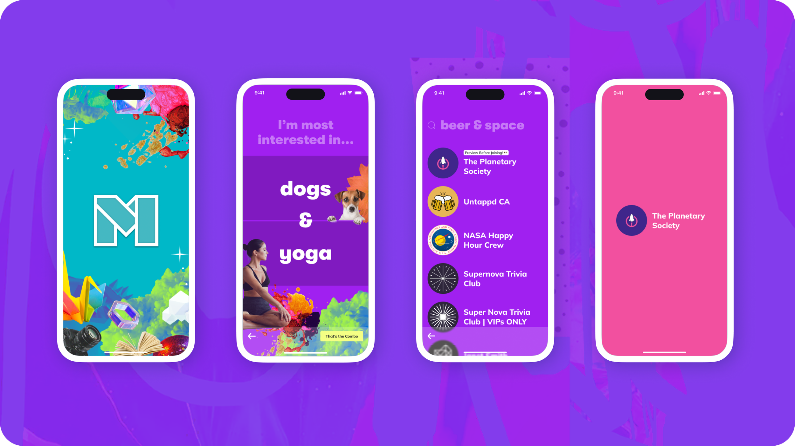
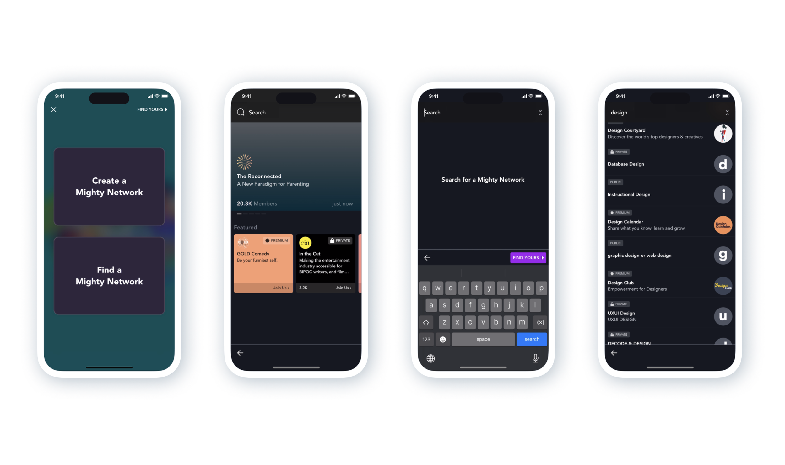
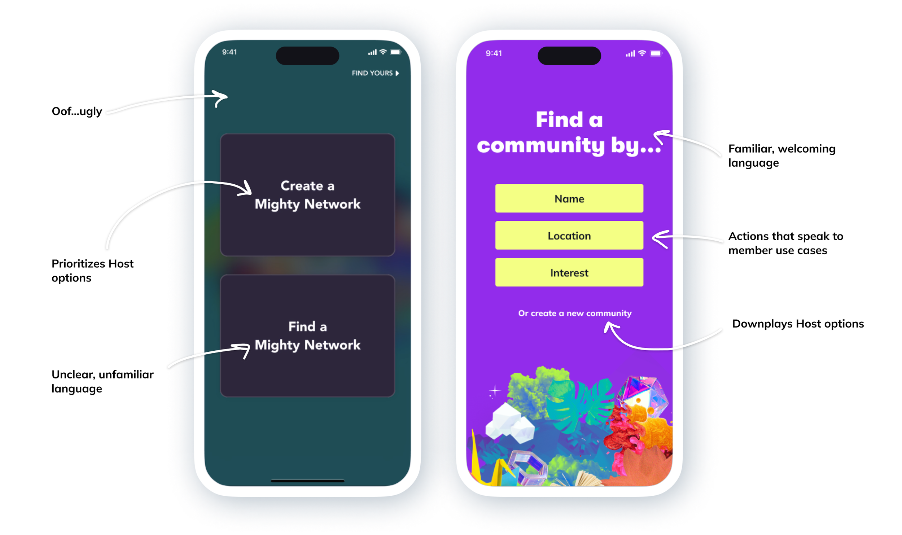
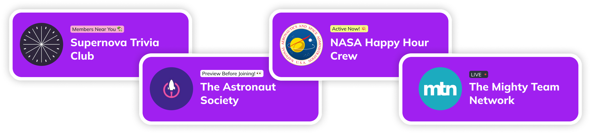
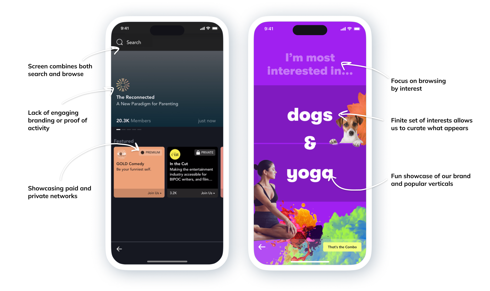

Screens from the new first app experience proposal
The Problem

The original first app experience
At Mighty Networks we are constantly evaluating what projects will have the highest impact on our key metrics, and in my role as Director of Design, I am always on the lookout for design-first solutions. To me, the first experience downloading our app was a clear area where we were not providing a top quality experience, but with a huge roadmap of new features, and a company focus on a different user group, proving that this project held value was an uphill battle.
The Proposal
This was a time where showing was going to be better than telling, so I put together a prototype to sell the vision of what could be, centered around a few key principles and metrics that I identified along the way. While a lot of the benefits provided by this project fall in the "you can't measure it but you can feel it" category, there are two key metrics I aimed to affect: monthly active members (MAM), and the number of customer support tickets related to member account creation and finding networks.
Principle 1: Speak to the Member
As a B2B2C company, we have two key user groups at Mighty Networks — Hosts, those who create and run a network; and members, those who join and participate in them. In our original first app experience, we offered two options of equal weight on the first screen of the app — "Create a Network," which was geared towards Hosts, and "Find a Network," which was geared towards members.
We received regular feedback from members that this was a confusing experience, and they frequently wrote in to our support team with issues. As for our Hosts, we had clear evidence that they spent most of their time on our desktop experience, only using the mobile app to see how a member might see things, or interact quickly with their community on the go.
"Thanks for sharing the screenshot! It looks like [the member] created a new network instead of creating a new account. I encourage her to sign up on the web at the Landing Page here, and I will delete the other account." — Customer Advocate, speaking to a Host
Based on these observations, one principle for the new first app experience was to speak to the member. I wanted to focus on helping members understand the world they were entering, and excite them about the idea of navigating a new app rather than dreading it.
In my proposal, I accomplish this by downplaying host use cases, using common language like "community" rather than concepts like "Network" that need explaining, and providing clear options that spoke to the member-specific use cases we identified.

The original vs updated landing screens of the Mighty Networks App
Principle 2: Represent Our Brand
In our original design, we specifically wanted to downplay Mighty Networks branding, so as to support our Hosts and not encroach on their carefully curated brands. While this meets a key need for our Hosts in certain contexts, it created other problems here that we needed to address.
For one, it meant that our app did not reflect the very clear and colorful branding we had at Mighty Networks, resulting in our app feeling disconnected from our brand, and even a little bit untrustworthy. It also left members with nothing to anchor on upon first download of the app, and no voice to help them find their way.
With this proposal, I made sure that our brand as Mighty Networks was front and center, while still celebrating the brands of the individual networks themselves. I wanted to create clear, defined moments that made it obvious when you were interacting with the world of Mighty, and when you were interacting with an individual network. Big, bold color changes and obvious screen transitions help you not just notice, but celebrate when you leave the world of Mighty to head somewhere new.
Animations showcasing Mighty branding vs network branding
This clear separation of branding also allows us to accommodate for another common use case, where members can click on a direct link to a specific network. These members can skip the Mighty branding entirely, and will only ever see the branding for the Network they're going to, giving them confidence they are in the right place.
Principle 3: Activity, Activity, Activity
One of our product principles at Mighty Networks is that a network should always feel alive, but we struggled to showcase this in our first app experience.
For one, our search algorithm was very rudimentary, and more often than not surfaced inactive networks over thriving communities (this proposal did not address any of our issues with search, as that was a full project to be handled independently). In addition, every network on our platform is completely unique, meaning that common metrics that work well to indicate an active network — like member count, or last active date — will work for some networks, but might actually hinder others.
I experimented with a new set of tags to show on networks, using more sustainable ways of conveying liveliness. I proposed showcasing networks that were currently livestreaming, had a large number of members online, or had a large number of members near you (providing you had shared your location), as well as networks that allowed previewing before joining.

Network search result cards with new activity tags
I also employed the magic of animation to convey a feeling of liveliness. While a network was loading, I surfaced imagery from the spaces and people within it, exciting you about all there is to see and do once you get inside.
Network loading animation showcasing people and spaces
Principle 4: Showcase Our Best
A major sticking point in prioritizing a project to update the first app experience was our dreaded "Featured Networks" screen. We had hoped to curate a list of our favorite networks for new members to admire, but in practice this screen had the opposite effect.
Many of our networks require payment to join, or are private communities reserved just for those who are approved. We were showcasing networks that we were proud of, but without the ability to see what was happening inside them, a new member had no idea how interesting they were. Instead they often looked dead, and even abandoned.

The original vs updated browsing experience in the Mighty Networks App
This proposal was a great opportunity to re-evaluate whether we needed this screen in our app at all. The goal for showcasing networks in the first place was just to prove that Mighty Networks is a place where vibrant, active, interesting communities come to thrive. And while we needed a mechanism for members to be able to find networks that were using our app, we didn't necessarily need every network to be available for browsing.
I removed the generic option to "browse" in favor of helping members find networks in 3 key ways: by name, by location, and by interest. This separated the members who were searching for something specific, from those just looking around. In particular, the addition of "Interests" allowed members to feel like they were browsing, but on the back end allowed us to put together a very specific, curated set of networks. This gave us a level of control that wasn't necessarily apparent, and also gave us a marketing opportunity to showcase some of our key verticals in a unique and interactive way.
New "Interests" experience in the Mighty Networks app
Conclusions
This proposal went a long way in showcasing what we were missing out on by failing to pay attention to this area of our product. I presented this prototype all across our company, and was able to generate a lot of excitement and prompt many follow up conversations.
We split this project into many smaller features and prioritized them on our roadmap (a win in itself!), and made a few immediate updates:
- We removed the "Featured Networks" screen from the app entirely, knowing we had bigger and better plans for showcasing networks coming in the future. This made a quantitative impact on our community strategy team, who thanked us for removing this burden from their day to day work.
- We updated the app landing screen, detailed in Principle 1, to offer a clearer set of options to members, and downplay the Host actions. This resulted in a measurable decrease in support tickets from members to our customer support team.
- We were not able to make a measurable impact on MAM, but we were able to instrument better analytics on our first app screens so we can more effectively measure MAM in the future.
- Most importantly, we made a major strategy shift in how we thought about our member experience as a company. This proposal was the start of many conversations around the value of focusing on members, not just Hosts, to really differentiate ourselves in a competitive market.
In the process of making these updates, the company underwent a change in branding, so while we implemented some of the ideas described in this proposal, they take on a more mellow tone to match our new, more understated brand.